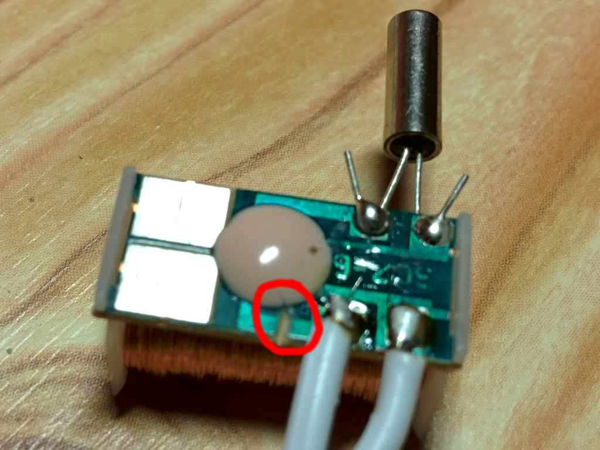

TurrisClock
Driving clock mechanism from the Turris router
This is a hardware and software design allowing you to connect common quartz analog clock mechanism to a Turris router to be controlled by it. Such clock has some ultimate features:
- precise atomic time thanks to NTP
- ability to pause and resume movement at any moment (no more ticks disturbing your sleep)
- battery-free operation
- special effects like stepping 5 seconds at time

Hardware
Carefully disassemble the clock machine. Hook up two wires directly to the Lavet type stepping motor winding. You can take out the original circuit or let it in place. In the latter case, make sure you disconnect at least one wire of the winding from the original circuit to avoid interference.

The interface

Design files for the interface are available in the eagle branch. It has been made using EAGLE 7.2.0. The interface connect the clock motor to GPIO connector (P3 on the Turris board) via 10-wire flat ribbon cable.
Software
Software is written in Python 2. Since there is no hand position feedback, user has to provide current hand state before first run of the clock:
# ./turrisclock.py --state 12:34:56
After regular shutdown of the control software, the state of the clock is written to /root/clockstate.txt from which it is reloaded on next start.
Adjust polarity
Since the Lavet motor requires polarized control pulses, if pulses are inverted, the clock appears one second behind. In that case, the polarity of control pulses has to be inverted. It can be done in hardware by exchanging the wires connecting the Lavet motor, or by using command line switch --invert. Information about polarity inversion is also stored together with the clock state.
Goto utility
In order to set the clock to some specific state, a simple utility can be used:
# ./goto.py 12:00:00
Stepping more seconds at time
You can make the clock go n-seconds at time by using switch --step <n>
Waiting with comfort steps
When the clock state is just a few minutes ahead of current time, it's usually not useful to go fast forward all around the clock. Doing so would take much more time than just waiting until current time reaches the clock state. The software therefore computes what approach leads to faster sync and act accordingly. To appease users during waiting, a comfort step is inserted every 10 seconds (configurable with --comfortstep command line argument).
Known issues
Clock losing steps, especially during fast-forward movement
- problem is usually in poor quality of the clockwork, eg. unbalanced hands, big backlash, etc.
- you can try to adjust time constants
ontimeandofftimeinclock.py
Clock state is lost when the router loses power
This could be solved by saving the clock state after every step into the SRAM of battery-backed RTC chip inside Turris. However, there is no driver support for this SRAM yet.
Running two instances of the control software results is strange behaviour
Locking is not implemented yet. Patches are welcome!